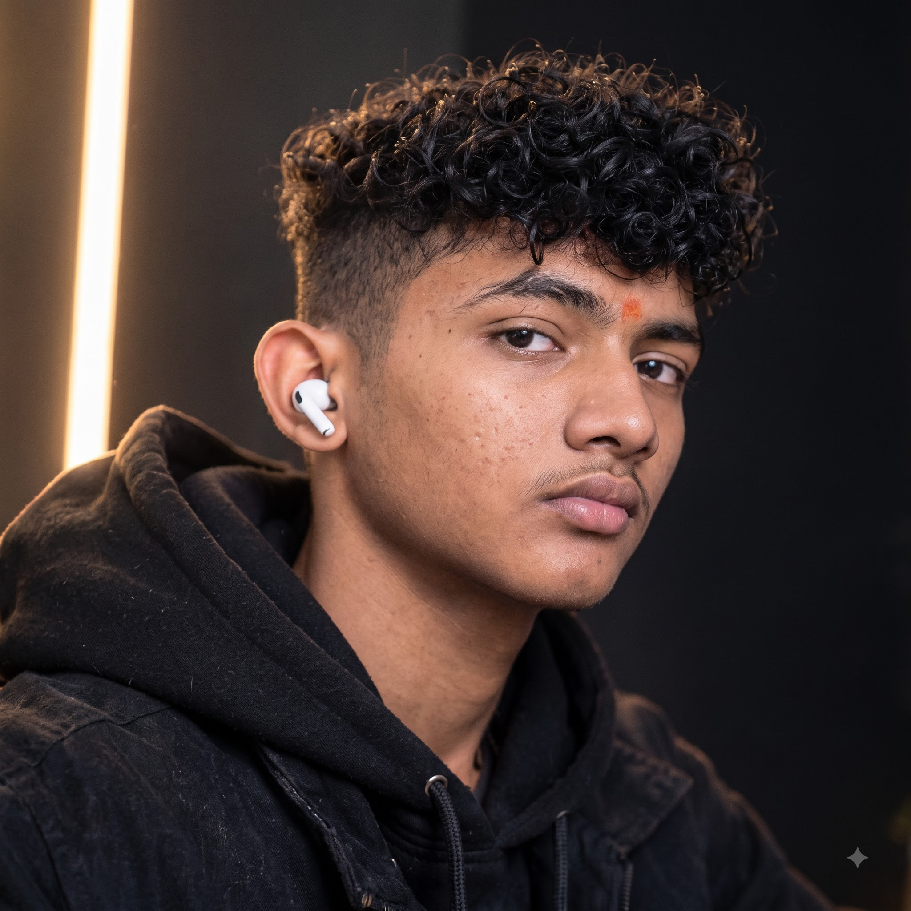

AK Media
A digital home for a creator-marketing studio, built around clear campaign paths and a screen-first introduction.
Independent developer / Patna, India
I’m Ankit — a student and creative developer exploring the space between frontend, motion, and practical AI.

01 Selected work
Websites, experiments, and systems shaped around a clear idea. Open a project to see how it came together.
A digital home for a creator-marketing studio, built around clear campaign paths and a screen-first introduction.
An AI agency concept, developed in two passes, exploring service paths, distinct visual systems, and agent workflows.
A knowledge workspace concept for turning videos, articles, and PDFs into summaries and searchable notes.
An earlier portfolio experiment exploring canvas visuals, spring motion, and small interactive details.
02 A short note
I’m a student and creative developer from Patna, India. I learn by making things that solve a real problem and feel considered in use.
Most of my work sits where frontend engineering, motion, and AI meet. I like finding the simplest structure that makes an idea clear, then giving it enough character to be remembered.
Start with what someone needs to understand or do. Let the interface follow.
Use motion to guide attention and show change, with room for people to opt out.
Prototype, learn what works, and keep improving the parts people actually use.
03 The toolbox
I choose a stack to suit the idea, then keep the interface, motion, and underlying system working together.
JavaScript · TypeScript · React · CSS · Vite
GSAP · ScrollTrigger · Canvas
Node.js · Convex · Agent workflows · MCP
04 Start a conversation
For thoughtful websites, interaction design, or curious AI experiments, send me a note. I’d love to hear what you’re making.